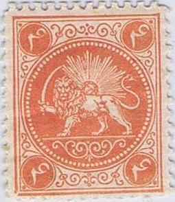
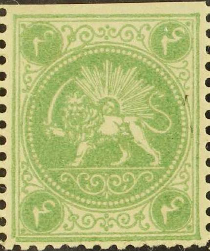
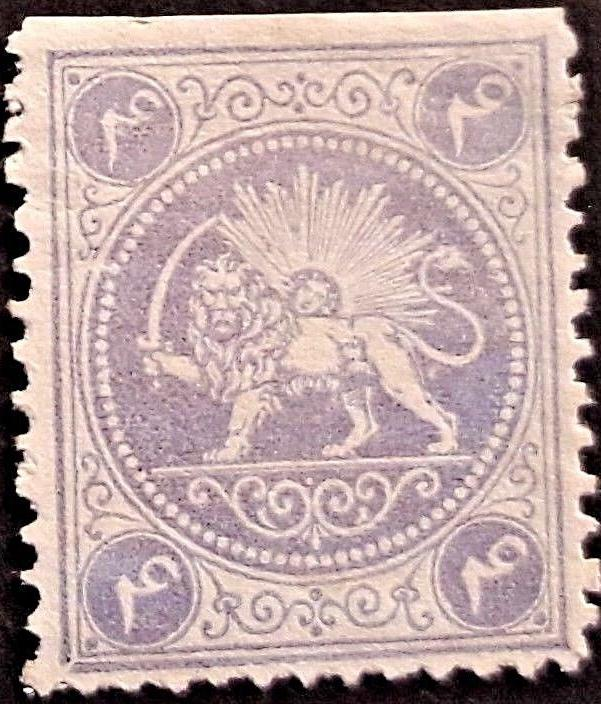
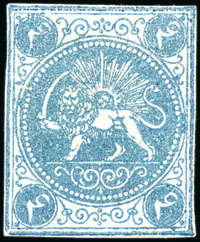
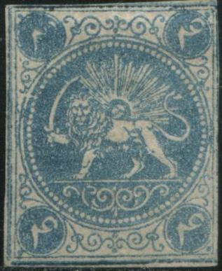

PERSIA 1868 issue Types, 4 ch and 8 ch
Currency: 1 Toman = 10 Kran = 200 Chahi (or
Shahi), after 1881: 1 Kran = 100 Centimes
Return To Catalogue -
Persia 1868 issue, types, part 1, 1 ch and
2 ch - Persia 1868 issue, types, part
3 - Persia (Iran) 1868 issue - Persia 1868 issue, forgeries, part 1 - Persia 1868 issue, forgeries, part 2 - Persia 1868 issue, forgeries, part 3
Note: on my website many of the
pictures can not be seen! They are of course present in the
catalogue;
contact me if you want to purchase the catalogue.
More information about stamps from Persia, forgeries etc. can
be found on: http://www.persi.com/fakes/fakes/fake.html (link no
longer active), http://fuchs-online.com/iran/lions-03.htm or
http://www.iranphilatelic.org/scams.htm. Also the book of
Friedrich Schuller 'Die Persische Post und de Postwerthzeichen
von Persien und Buchara' has much information.
First stamps were printed in rows of four stamps,
later also blocks of four stamps were printed.
Persia 1868 issue, types,
part 1, 1 ch and 2 ch
The first stamps (without numerals between the
legs) were printed in four types. These types were based on the
five types of the Barre essays (one
type was not used). Pairs or other multiples do not seem to exist
for the first issue? Unfortunately, neither the book of Schuller
nor the websites http://fuchs-online.com/iran/lions-02.htm and
http://fuchs-online.com/iran/lions-03.htm gives any information
about the types. This is what I could find out about the types of
the first stamps:
For the 4 ch blue value, the Barre cliches 1,2,3
and 5 were used (cliche 4) was not used:

Based on cliche 1 of the Barre essays?
In my view, there is a break in the outer right frameline about
1/3 from the bottom. Also a 4 ch red (type C) with the
"4" added between the legs of the lion, in this subtype
the "4" does not touch the line below it. Also a 4 K
yellow in the same type.







Two Barre Essays, type 2 (broken bottom left corner). 4 ch blue,
with broken lower left corner, taken from the second Barre
cliche. Also Type A of the 4 ch red (based on this cliche) with a
very narrow "4" and a 4 K yellow.
Type 3 of the Barre essays, in my
opinion it has a little bulb 3/4 up in the left outer frameline.
I also think that the white circle has a blob in it at 2 o'clock
(just below the upper right number 8). This bulb in the left
outer frameline can still be seen in the 4 ch red of this type.
4 ch Barre type 5 and 4 ch blue. In my view, this Barre essay
(type 5) has a tiny dot in front of the leg of the lion (just
above the horizontal line). In my view, in the 4 ch blue type
there is a kink in the inner bottom frameline just below the
right curl (which is not yet present in the corresponding Barre
essay). Also, there appears to be a scratch in the horizontal
line between the legs of the lion.
The 8 ch red was made from 4 out of the 5 cliches
of the Barre essays, i.e. only cliches 1, 2, 4 and 5 of the Barre
essays were used.
I have some difficulties distinguishing cliches 1
and 5....
8 ch red, based on Cliche 1 of the Barre essays?

Stamps based on Barre cliche 1. An "8" was added
between the legs and the color was changed to green in 1875. The
8 ch cliches were then used to make 5 K stamps by erasing the
corner values and putting Arabic "5"s instead. The
upper right corner was (badly) repaired. An attempt was made to
erase the "8" from between the legs, but it is still
very visible. The printing became worse and worse towards the
end.
8 Ch Barre essay cliche 2; Broken left hand bottom corner. I
presume the 2 ch red stamps were based on this type. Type C of
the 5 K stamp, based on Barre type 2.

Barre essays (blue and red) and 8 ch; cliche 4 with damaged upper
left corner and a dot on top of the upper left Arabic
"8". There are usually some breaks in the right hand
side of the bottom frameline. In the 8 ch green, a "8"
was inserted between the legs of the lion. The 8 ch cliches were
then used to make 5 K, type B stamps by erasing the corner values
and putting Arabic "5"s instead. An attempt was made to
erase the "8" from between the legs, but it is still
very visible. Note the very staring white eyes in the 5K violet
and blue (which were re-engraved on this type?), in the subsquent
gold and green colors the design has become very blurred.

Stamps based on Barre cliche 5? In my view, this type has two
breaks in the left hand side, one in the inner straight line
(halfway up) and another in the circle just besides it. Also a 8
ch green (Type D) based on Type 5 of the Barre essays (with the
"8" connected to the line below it). And some 5 K
stamps based on this type. Finally, three Boital reprints (rather
common!), made from this type, even perforated Boital reprints
exist.
Types 5 as well?
Persia 1868 issue, types,
part 3
Copyright by Evert Klaseboer


{kind=link}
{kind=link}
{kind=link}
{kind=link}
{kind=link}